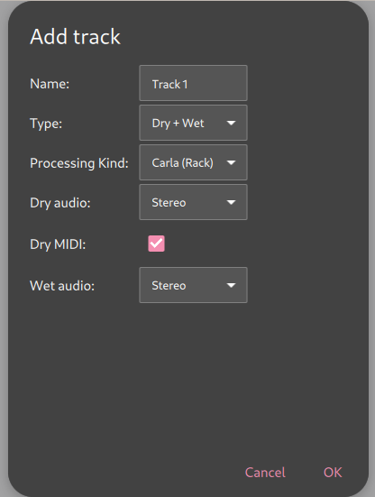
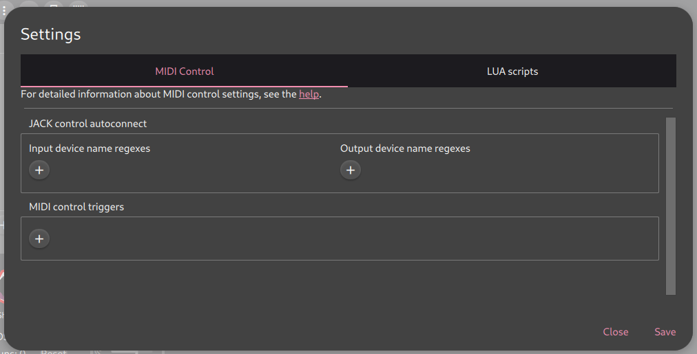
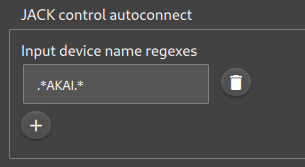
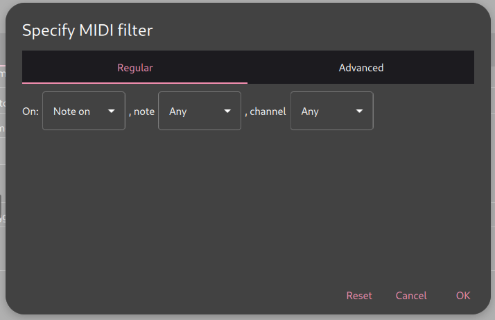
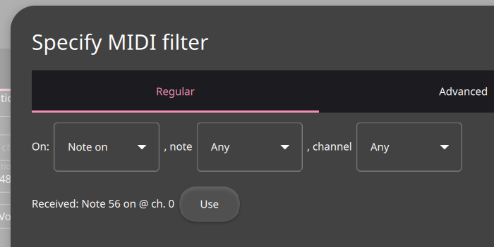

Usage¶
General¶
Many buttons in ShoopDaLoop have tooltips on mouse hover to explain their functionality. Some buttons have special functionalities on “click and hold”.
Controlling Loops¶
Loops in ShoopDaLoop can be controlled by mouse, keyboard or MIDI controllers. There are also several global controls that affect each command given to a loop.
Global Controls¶
{kind=link}
The global controls bar.¶
The global controls groups and their contents, from left to right, are:
menu
- action buttons:
stop all
deselect all
clear multiple
- controls:
default record action
auto-play recorded
sync mode
solo mode
record cycles
Hovering over any of these buttons shows their function in a tooltip. Some of these are toggleable. These can be clicked to toggle them, and some also have a keyboard mapping to momentarily invert them.
Some details:
default record action: toggleable (no mapped key). Chooses the preferred method of recording (“record” or “grab”). This affects default behavior or some buttons / MIDI inputs (such as the spacebar).
auto-play recorded: toggleable (
Altkey). If active (highlighted), the default trigger after recording a loop is to play it back. That includes the behavior when doing a default trigger on a loop (spacebar / MIDI controller), but also affects what happens after triggering a fixed-length recording (playback or stop). It also affects the grab button (explained below).sync mode: toggleable (
Ctrlkey). Affects the timing of loop triggers. If sync is not active (exclamation symbol), loop triggers such as play, stop, record execute immediately. If sync is active (hourglass symbol), such commands happen at the first upcoming restart of the sync loop.solo mode: toggleable (
Shiftkey). If active (highlighted), commands such as play and record will stop all other loops in the same track(s).record cycles: Numeric control. Change by pressing the number keys on the keyboard at any time, or clicking the +/- controls. Setting to 0 sets it to infinite. This affects recording commands. If set to infinite, triggering a recording will record the loop until another trigger is given. However, if set to a specific number, the recording will last N sync loop cycles before going to playback/stop. This also affects the grab button (explained below).
Loop Controls¶
{kind=link}
The loop controls as seen when hovering over a loop with the mouse.¶
The icon in the left-hand side of a loop displays its current state. It is also an area where you can grab and drag the loop to another location, or right-click it to open a context menu. The rest of the icons shown here appear when hovered with the mouse.
Loops support several kinds of triggers. play (green), record (red, rendered partly green if auto-play recorded is active) and stop do what you would expect. Note that playback is always looping once started. Also note that by default, playback happens from the wet recording for dry/wet tracks, meaning that the audio recorded from the FX/synth output is played back.
There is an individual volume dial for the loop playback, as well as a balance dial for stereo loops (appears when hovered over the volume dial).
The orange variants of the play and record commands are present for loops on dry/wet tracks, and are referred to as play dry and re-record dry:
play dry is equivalent to play, except that instead if playing back the wet recording, we play back the dry recording through the synth/FX. That means you can tweak the instrument/effects and hear the result. Be aware that all loops in the same track share a single FX/synth, so using play dry on multiple loops simultaneously may give unexpected-sounding results because the dry signals will merge together - especially when using MIDI signals.
re-record dry is meant for when you have changed the FX/synth settings, and want to re-record your wet recording to make it permanent. When clicked, the loop will play back its dry signal through the track’s FX/synth, and simultaneously record the wet signal. When played back once, it will stop or playback again.
Finally, there is the grab button (downward-pointing arrow, partly green if auto-play recorded is active). This is explained below.
Grabbing (always-on recording)¶
Having to manually trigger recordings ahead of time can cost focus and break your flow. It also gets annoying when you make a mistake while recording - you have to re-trigger the recording again. Alternatively, “grabbing” means to instantly capture a recording in hindsight. It is made possible because ShoopDaLoop is always recording in the background. Usin this is the most intuitive way to record in most cases: you don’t have to prepare or trigger anything for recording. Instead, just play, and once you are satisfied with what you played, grab it into a loop.
The main thing to get used to with grabbing is that you need to instruct ShoopDaLoop:
how many cycles to grab;
how many cycles ago did the recording of interest start.
For this, the global controls are used:
By default, if sync mode is on and record cycles is 1 or “infinite”, a single sync loop cycle’s worth of data will be grabbed, and it will be the part that was played during the most recently completed sync loop. In other words, if you play something, wait for the sync loop to restart, and then grab, what you played is captured. Note that if auto-play recorded is active, it will also start playing immediately when grabbed.
Changing record cycles affects the grabbed amount of cycles. The alignment is still such that the last grabbed cycle aligns with the last completed sync loop cycle.
When sync mode is off (immediate), the behavior slightly changes. The currently playing sync loop cycle will be included in the grab. Because the cycle is not yet finished, the loop will also immediately go into “record” mode to record the remainder, and then automatically go to playback/stop afterward. This is useful if you want the playback to start seamlessly - after all, when grabbing in hindsight, you only hear the playback after grabbing.
Grabbing works nicely together with loop targeting. If you have targeted another loop (details below), grab will behave as if that loop was the sync loop. In other words: if you target a loop that is playing back, play a second part together with it, and then grab afterward, your recording will line up with the targeted loop.
Grabbing also works on composite loops, in which case the behavior is slightly different - see below in the composite loop section for details.
Selecting and Targeting¶
Loops can be selected (yellow border) by clicking their icon next to the buttons on the left-hand side. Selection is useful for triggering multiple loops together. Performing a transition on any loop will also perform the same transition on all currently selected loops. The selection can be moved by the keyboard keys. Multiple loops can be selected by holding the Ctrl button and clicking more loops or pressing arrow keys.
A single loop can be targeted (orange border) by double-clicking it or pressing T. The behavior of certain loop transitions is different if another loop is currently targeted. Generally speaking, the idea of targeting is: let ShoopDaLoop pretend that loop is the sync loop. So most actions/triggers will sync to the restart of the targeted loop. This is particularly useful if you want to record multiple parts that are more than 1 cycle long - you don’t have to think about how many cycles to record, or when to trigger exactly.
Pre-recording¶
Oftentimes, a catchy hook or riff will start before the “1” of the music. Or, the loop starts on 1 but you want to start it will e.g. a small fill the first time. This makes it complicated to loop sometimes, because you would need to anticipate one sync loop cycle earlier than the actual looping part starts, and also start playback earlier.
For this reason, loops in ShoopDaLoop are already pre-recording in the before the real recording starts. You normally won’t notice this because the data for this part is stored but usually never played. Also when grabbing, additional cycles of data are stored before the “actually grabbed” part, so that pre-recording data is available.
To hear the pre-recorded part back, you need to enable pre-playback. This is done in the loop details window (opened from the loop context menu when right-clicking it). There, you can define a “pre-play range”. The way this behaves is that when a loop is stopped, and playback is triggered, the pre-play range will play back before the loop playback starts. In other words, your drum fill going into the loop will be heard. When the loop is already playing back, the pre-play part is not played again on every cycle - only the first time.
MIDI looping¶
In principle, MIDI loops work the same as audio loops. However, playing back a MIDI signal will not always result in the exact same sound as the first recording, because:
The audio synthesis (in plugin or external JACK application) may have internal state that is not directly controlled by MIDI;
MIDI has a state, which includes all CC values, pitch bend, notes already active at recording start, etc.
The way ShoopDaLoop approaches MIDI playback is to approximate the state at the start of recording as closely as possible. That means:
ShoopDaLoop will restore states like CCs (including sustain pedal, mod wheel, pitch) to the state they were in when recording started, at the start of every playback loop.
If a note was already active when recording started, ShoopDaLoop will remember this and play the same note at the start of every playback loop. One advantage of this is if a note was played just slightly before recording start, it will sound indistinguishable in most cases. Note that this does not in include notes that are finished (on + off) just before recording start.
Composite Loops¶
A composite loop can be created by selecting an empty slot, then holding Alt and clicking another loop. The other loop is added to the composite loop composition:
Normally at the end of the current sequence. Note that the same loop may also be clicked multiple times to add it repeatedly.
If Ctrl is also held, it is added in parallel of the current sequence.
Note that Alt + click will append to the first “timeline”. So for example, if a short loop is composed in parallel with a long one, Alt - click will add an additional loop to play right after the short one.
For advanced editing of the sequence, the loop details window should be used (note that at the time of writing this, that is unimplemented).
Composite loops are shown in pink; if a composite loop is (solely) selected, all its sub-loops are highlighted with a pink border.
Playback¶
Playing back a composite loop will play the loops as sequenced. Empty sub-loops are skipped. The progress indicator on the composite loop shows the total progress. The playback will cycle back around to the start of the sequence.
Recording¶
Pressing “record” on the composite loop will re-record the subloops in sequence.
Loops are recorded based on their current length. For empty loops, the application assumes that they will be n cycles long (referring to the global n cycles control).
Note that there is a special case if the same subloop is sequenced multiple times. It will not re-record multiple times. Instead, after re-recording it the first time, additional occurrences in the sequence are skipped with the subloop idle.
Grabbing¶
A composite loop can also be grabbed. Instead of grabbing audio data into the composite loop, instead this will cause the child loops to each grab their portion.
This can be a powerful tool for structuring your looping session. Let’s illustrate with an example.
Say you’ve reserved your 1st and 2nd rows of loops in the session for two different “scenes” (or sections of the song). And let’s say these two scenes need different basslines, which you want to record in one go.
One thing you could do is define a composite loop which is a sequence of the bass loops in scene 1 and 2 (e.g. by using Alt+click while the composite slot is selected).
Now, you can play your two basslines directly after one another on the instrument without touching a thing, then use Grab on the composite loop. Each bassline will be grabbed into its respective slot instantly, and the sequence of these two basslines will start playing if play after record is enabled.
Generally speaking, grabbing on composite loops does what you would expect given the behavior described in the loop controls section. But there are some differences for composite loops:
Grabbing a composite loop does not respect the global n cycles control or the targeted loop for synchronization and length of the grab. Instead:
The total length of the grab is always the already calculated composite loop length. Child loops which do not have an explicit length are assumed to be n cycles (global control) sync cycle long.
The alignment of the grab is as follows:
If the global sync control is active, the last completed sync cycle is mapped to the last cycle of the composite loop.
If the global sync control is inactive, the currently running sync cycle is mapped to the last cycle of the composite loop. The remainder of the current sync cycle will keep recording into the last part.
Note that only regular composite loops can be grabbed.
Controlling Tracks¶
Gain Controls¶
ShoopDaLoop tracks have two gain controls:
The input gain governs gain of the track’s input ports. All incoming signals are attenuated by this gain. This means it affects both monitoring and recording.
The output gain governs gain of the track’s output ports. All outgoing signals are attenuated by this gain. This means it affects both monitoring and playback.
Both gain controls come with:
A balance knob if the in-/outputs are stereo for this track.
A mute button to mute the track’s in-/outputs. For the input this differs from the gain fader in that it only affects monitoring, not recording.
Track Configuration¶
When a new track is added using the add track button, you are presented with the Add Track Dialog:
{kind=link}
The available settings are:
Name: the display name of the track. Also determines the base name of the track’s ports, which won’t be renamed if the track is renamed.
Type: the type of track. Two options are available:
Direct: Direct looping. Audio/MIDI inputs are routed to the loops, and loops are routed to Audio/MIDI outputs.
Dry/Wet: Dry/Wet looping. Audio/MIDI inputs are routed to the dry loop, and the dry loop is routed to the wet loop. The wet loop is routed to the Audio/MIDI outputs.
Processing Kind: Only applicable to dry/wet loops. Determines the signal path from dry to wet. There are several options:
External (JACK): Create additional ports such that an external FX/synth chain can be connected. It is up to the user to connect an external application from the send to the return ports.
Carla (Rack): Host FX/synth internally in Carla as a plugin. Carla is run in Rack mode (straightforward FX chain).
Carla (Patchbay): Host FX/synth internally in Carla as a plugin. Carla is run in Patchbay mode (processing graph).
(dry/wet/direct) Audio: Number of audio channels for the track’s loops.
(dry/direct) MIDI: Whether to enable a MIDI channel. For direct tracks, this will loop MIDI with a MIDI output. For Dry/Wet tracks, MIDI is only supported on the dry side (the expectation being that the FX to wet includes some kind of synthesis to audio).
Port Connections¶
Connections to a track’s ports can be managed using the Connections Dialog. It can be found under the track settings menu dropdown (Connections…).
MIDI Controllers¶
ShoopDaLoop can be controlled by MIDI signals. This can be done either through the user configuration or by writing advanced integration scripts in Lua. The former is described here - for the latter, see Lua scripting.
To configure MIDI settings, open the Settings dialog and go to the MIDI Control tab:
{kind=link}
Autoconnect¶
In most cases, you will want ShoopDaLoop to connect automatically to your controller via the JACK patchbay. To do this, enter a regular expression for your device name into the respective autoconnect regex field:
{kind=link}
Save your configuration and try it out. When connecting your device, ShoopDaLoop should automatically connect to it.
MIDI control rules¶
MIDI controllers are set up as a list of rules. A rule defines a filter that selects incoming MIDI messages, possibly a condition, and an action to execute. Rules can be simple mappings of messages to actions, up to advanced rules where filters and actions may both incorporate snippets of Lua code.
Example 1: Simple mapping using MIDI Learn¶
In this example we want to map an incoming note to perform the default action on any selected loop(s).
First, ensure your device is automatically or manually connected to ShoopDaLoop’s control MIDI port.
Next, click the “+” to add a new MIDI trigger. A filter dialog greets you:
{kind=link}
Here we configure the filter selecting our incoming MIDI message which will trigger our action. Rather than choosing the filter manually, press a button on your MIDI controller. A notification should appear of what was just received:
{kind=link}
Click “Use” to use the received message as a filter. If you wish, you may modify the filter (such as making it independent of channel by setting the channel to Any). Press OK to accept the trigger.
A new trigger has been added to the list. From the “Do:” dropdown, choose “Default Loop Action”. Leave the newly appeared “loops” input set to “selection”.
Save your configuration and test it out: Close the settings window, use the mouse or keyboard to select a loop (it will light up yellow) and press the same button on your MIDI controller. It should now (try to) transition to Recording.
Example 2: Advanced note-to-loop mapping¶
Some midi controllers have row(s) or grid(s) of buttons that can be used to trigger loops. In that case it is cumbersome to set up individual rules for every button.
Instead, we can use a single rule that maps the incoming note to the loop number. This can be done by using a Lua expression in the filter.
As in example 1, set up your device so it is connected and open the filter dialog for a new trigger rule. Try out a few buttons on your controller and note down the note number received. You will need to work out the formula that calculates the ShoopDaLoop loop coordinates (row, column) from the note number. In our example, let’s assume we worked out that the row will be the note divided by 8, and the column will be the remainder.
Again, let’s choose the Default Loop Action, but now, for the “loops” input, choose “custom”.
A box appears where a Lua expression can be entered. In Lua:
Division is done with the “//” operator
Remainder is done with the “%” operator
An array is specified with curly braces “{}”.
So our loop coordinates expression in this case is: “{note//8, note%8}”. Press OK to accept the trigger.
Your loop buttons should now be mapped to ShoopDaLoop’s grid.
Keyboard control¶
The computer keyboard can be used to control many aspects of ShoopDaLoop. Note that the keyboard control behavior is implemented as a custom Lua script (keyboard.lua), which means that if so desired, you can make your own keyboard control modifications by duplicating the script and modifying it.
The help text of the default keyboard.lua is shown here for reference. Note that this help text can be opened any time from the Lua script settings menu as well.
keyboard.lua: Handle keyboard events.
This script allows controlling ShoopDaLoop through keyboard keys.
- Arrow keys: Move the selection around. If the selection is empty, select the
loop at the origin. If multiple loops are selected, move all of
them as long as the group does not go out of bounds.
Holding the Ctrl key while pressing an arrow key will expand the
selection instead of moving it.
- Escape key: Clear the selection.
- Space key: Perform the default action on the selected loop(s). The default
action is to cycle between recording, playing and stopped modes
respectively.
- R key: Set the selected loop(s) to recording mode.
If none selected, select all recording loops.
- P key: Set the selected loop(s) to playing mode.
If none selected, select all playing loops.
- S key: Set the selected loop(s) to stopped mode.
If none selected, stop all loops.
- L key: Set the selected loop(s) to playing dry through wet mode.
If none selected, select all "playing dry through wet" loops.
- M key: Set the selected loop(s) to recording dry into wet mode.
If none selected, select all "recording dry into wet" loops.
- N key: "Record next": Queue recording into the first empty loop of the
currently selected/recording track.
- G key: "Grab": grabs data from the running buffer to record it retro-
actively.
- O key: "Overdub": Queue recording into the first empty loop of the
currently selected/recording track while playing back currently
recording loops.
- T key: Target the selected loop. If more than one loop is selected, one
of the selected loops is arbitrarily chosen. If already the target,
loop is untargeted.
- U key: Untarget all loops.
- W key: Record the selected loop(s) in sync with the targeted loop(s).
- C key: Clear the selected loop(s).
- "." key: Sampling mode. Selected loop(s) record/play immediately until
key is released, without regard for sync with other loops.
- 0-9 keys: Set the amount of sync loop cycles to apply future actions for.
0 disables this - all actions will be open-ended.
Most numbers higher than 10 can also be achieved by e.g. first
pressing and holding '1' and then also pressing '2' to set it
to '12'.
Note that for the loop-transitioning keys in the list above, whether the loop
transitions instantly or in sync with the sync loop depends on the global
"synchronization active" state. This can be toggled in the UI or momentarily
toggled by holding the Ctrl button.